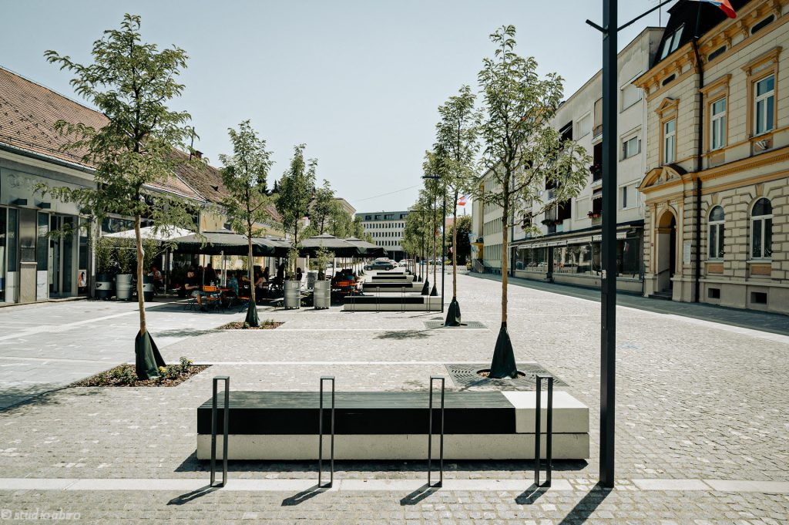
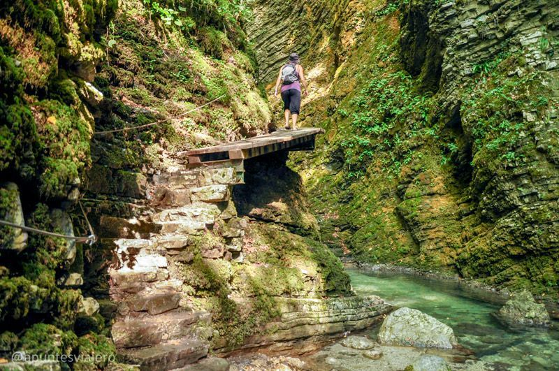
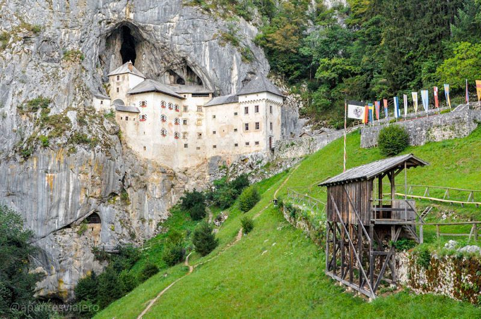
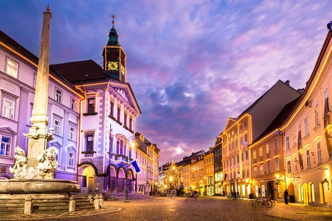
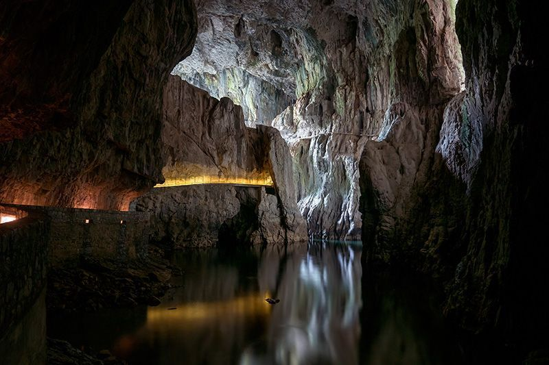
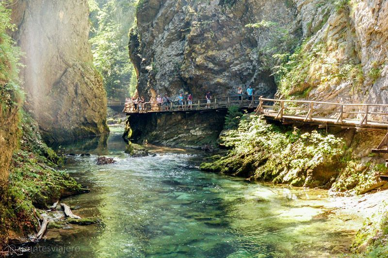
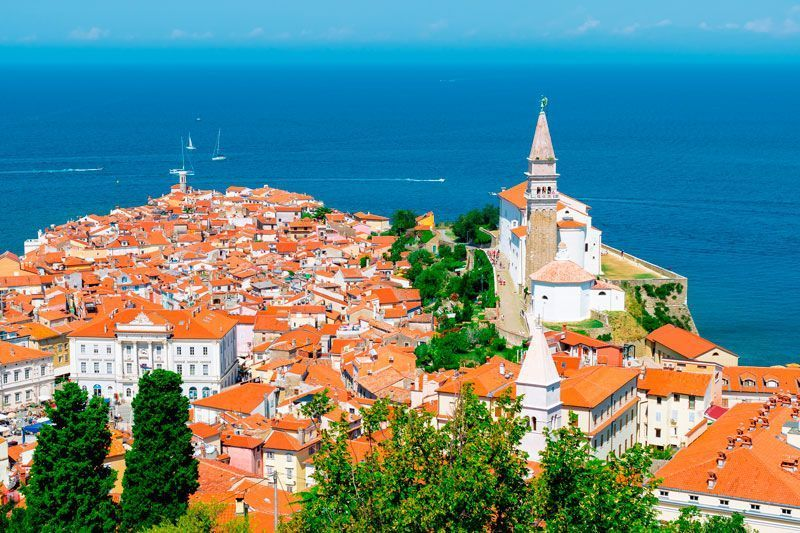
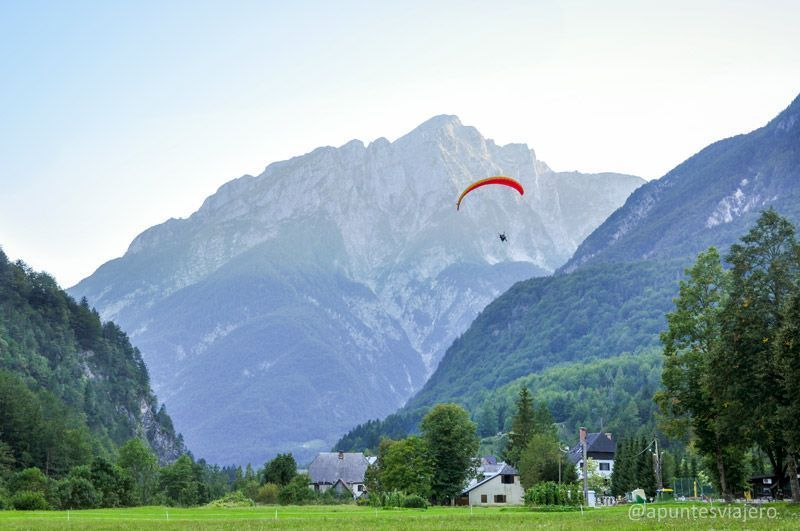
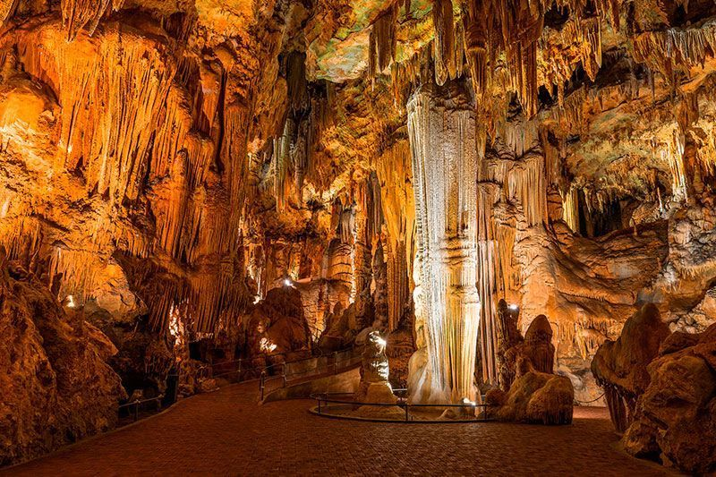

Un pequeño resumen de lugares más emblemáticos de Eslovenia. Aquí encontraras la información sobre este país europeo y sus rincones imprescindibles
|  Murska Sobota |
 Cascadas de Kozjak |
 Castillo de Predjama |
|---|---|---|
|  Ljubljana |
 Cuevas de Skocjan |
 Garganta de Vintgar |
|  Piran |
 Valle del Soca |
 Cueva Postojna |